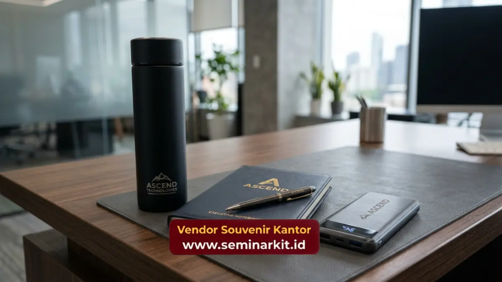

Vendor souvenir kantor adalah penyedia jasa produksi dan pengadaan merchandise korporat custom logo, mulai dari alat tulis, tumbler, hingga paket hampers untuk kebutuhan branding dan apresiasi perusahaan.
Layanan ini membantu perusahaan menghadirkan cinderamata berkualitas tanpa harus mengurus produksi sendiri.
Bagi tim HRD dan procurement, memilih vendor yang tepat berarti efisiensi waktu, konsistensi kualitas, dan hasil akhir yang benar-benar merepresentasikan citra perusahaan.
- Vendor souvenir kantor menangani seluruh proses dari desain, produksi, hingga pengiriman souvenir custom logo
- Souvenir korporat berperan penting dalam branding, employee engagement, dan hubungan dengan klien
- Pemilihan vendor yang tepat mempengaruhi kualitas cetak, ketepatan waktu, dan efisiensi anggaran
- vendorsouvenirkantor.web.id melayani pengadaan souvenir kantor custom logo dengan proses pemesanan yang mudah dan cepat
Apa Itu Vendor Souvenir Kantor dan Mengapa Perusahaan Membutuhkannya?
Vendor souvenir kantor adalah mitra bisnis yang menyediakan jasa produksi merchandise korporat, mulai dari desain logo hingga pengiriman produk jadi ke kantor pemesan.
Perusahaan membutuhkan vendor semacam ini karena pengadaan souvenir memerlukan keahlian teknis, jaringan supplier bahan baku, dan kapasitas produksi yang umumnya tidak dimiliki oleh divisi internal perusahaan.
Souvenir kantor bukan sekadar barang cetakan bermerek. Dalam praktiknya, produk ini menjadi representasi identitas visual perusahaan yang dilihat oleh karyawan, klien, maupun mitra bisnis setiap hari.
Sebuah tumbler custom logo yang dibawa karyawan ke berbagai tempat, misalnya, secara tidak langsung memperluas eksposur merek jauh melampaui lingkungan kantor.
Kebutuhan akan vendor souvenir kantor semakin meningkat seiring dengan berkembangnya budaya corporate branding di Indonesia.
Menurut data internal industri percetakan dan merchandise, permintaan souvenir custom logo cenderung meningkat signifikan menjelang akhir tahun dan periode perayaan hari jadi perusahaan, sebuah pola yang konsisten diamati sejak beberapa tahun terakhir.
Perusahaan yang merencanakan kebutuhan souvenir lebih awal umumnya mendapatkan harga yang lebih kompetitif dibanding pemesanan mendesak.
Apa Saja Jenis Souvenir Kantor yang Paling Banyak Dipesan?
Jenis souvenir kantor yang paling banyak dipesan meliputi alat tulis custom, tumbler dan botol minum, tas kanvas, hingga paket hampers untuk momen tertentu.
Pemilihan jenis produk biasanya disesuaikan dengan tujuan pemesanan, apakah untuk apresiasi karyawan, cinderamata klien, atau merchandise event korporat.
Alat Tulis dan Perlengkapan Kerja Custom Logo
Notebook, pulpen, dan flashdisk custom logo termasuk kategori souvenir kantor yang paling fungsional.
Produk ini digunakan secara rutin sehingga logo perusahaan mendapat eksposur berulang setiap harinya.
Vendor souvenir kantor umumnya menawarkan berbagai pilihan bahan, mulai dari kertas daur ulang hingga kulit sintetis premium, untuk menyesuaikan dengan positioning merek perusahaan.
Tumbler, Mug, dan Botol Minum Korporat
Tumbler dan mug custom logo menjadi salah satu kategori souvenir paling diminati karena nilai kepraktisan tinggi dan daya tahan pemakaian yang panjang.
Produk ini cocok untuk kebutuhan apresiasi karyawan maupun gift untuk klien pada acara gathering atau seminar.
Tas dan Merchandise Fashion Korporat
Tas kanvas, totebag, dan pouch custom logo memberikan nilai tambah berupa fungsi sehari-hari yang tinggi sekaligus tampilan yang stylish.
Kategori ini sering dipilih untuk goodie bag event, welcome kit karyawan baru, atau parcel akhir tahun.
Bagaimana Cara Memesan Souvenir Kantor Custom Logo dengan Mudah?
Cara memesan souvenir kantor custom logo umumnya dimulai dari konsultasi kebutuhan, pemilihan produk dan bahan, proses desain logo, produksi, hingga pengiriman ke alamat kantor.
Proses ini dapat berlangsung efisien apabila perusahaan sudah menyiapkan brief kebutuhan sejak awal.
Tahapan umum pemesanan souvenir kantor meliputi:
- Konsultasi kebutuhan dan anggaran dengan tim vendor
- Pemilihan jenis produk dan material sesuai budget
- Pengiriman file logo dan penentuan desain akhir
- Proses produksi sesuai jumlah dan spesifikasi pesanan
- Quality control sebelum pengiriman
- Pengiriman produk jadi ke lokasi yang ditentukan
Semakin jelas brief yang diberikan perusahaan di tahap awal, semakin cepat pula proses produksi dapat berjalan.
Hal ini penting terutama bagi perusahaan yang memiliki tenggat waktu ketat, misalnya menjelang acara corporate gathering atau kunjungan klien penting.

Apa Manfaat Souvenir Kantor bagi Branding dan Hubungan Bisnis?
Souvenir kantor memberikan manfaat berupa penguatan brand awareness, peningkatan loyalitas karyawan, dan terjaganya hubungan baik dengan klien maupun mitra bisnis. Manfaat ini bekerja secara bertahap melalui eksposur berulang dan kesan positif yang ditinggalkan produk fisik.
Bagi internal perusahaan, souvenir kantor sering digunakan sebagai bentuk apresiasi kepada karyawan atas pencapaian tertentu, mulai dari target kerja hingga masa kerja tahunan. Pemberian merchandise semacam ini terbukti mampu meningkatkan rasa memiliki karyawan terhadap perusahaan tempat mereka bekerja.
Untuk hubungan eksternal, souvenir korporat yang diberikan kepada klien atau mitra bisnis pada momen tertentu, seperti penandatanganan kontrak atau kunjungan kerja, turut membangun kesan profesional sekaligus mempererat relasi bisnis jangka panjang.
Apa Saja Faktor yang Perlu Dipertimbangkan Sebelum Memilih Souvenir Kantor?
Faktor utama yang perlu dipertimbangkan sebelum memesan souvenir kantor meliputi kesesuaian anggaran, kualitas bahan, ketepatan waktu produksi, serta relevansi produk dengan target penerima.
Keempat faktor ini saling berkaitan dan menentukan keberhasilan program souvenir korporat secara keseluruhan.
Anggaran menjadi titik awal yang menentukan pilihan jenis dan jumlah produk. Perusahaan perlu menyesuaikan antara jumlah penerima dengan kualitas produk agar hasil akhir tetap proporsional dan tidak membebani biaya operasional.
Kualitas bahan turut memengaruhi persepsi penerima terhadap merek perusahaan. Souvenir dengan bahan berkualitas rendah justru dapat menimbulkan kesan kurang profesional, sehingga penting untuk memastikan standar produksi tetap terjaga meski dalam jumlah pesanan besar.
Apa Kesalahan Umum yang Sering Terjadi dalam Pengadaan Souvenir Kantor?
Kesalahan umum dalam pengadaan souvenir kantor meliputi pemesanan mendadak tanpa buffer waktu produksi, pemilihan produk yang tidak sesuai kebutuhan penerima, dan minimnya koordinasi terkait desain logo pada tahap awal. Ketiga kesalahan ini paling sering menyebabkan hasil akhir yang kurang maksimal.
Pemesanan yang dilakukan mendadak sering kali memaksa perusahaan menerima kualitas produk seadanya karena waktu produksi yang terbatas.
Idealnya, perencanaan souvenir kantor dilakukan minimal beberapa minggu sebelum tanggal penggunaan agar proses desain dan produksi dapat berjalan optimal.
Kesalahan lain adalah memilih produk berdasarkan tren tanpa mempertimbangkan relevansi dengan aktivitas sehari-hari penerima.
Souvenir yang jarang digunakan cenderung berakhir tidak terpakai, sehingga tujuan branding tidak tercapai secara maksimal.
Kenapa Memilih vendorsouvenirkantor.web.id untuk Kebutuhan Souvenir Kantor Perusahaan Anda?
vendorsouvenirkantor.web.id hadir sebagai solusi pengadaan souvenir kantor custom logo dengan proses konsultasi yang mudah, pilihan produk lengkap, serta standar produksi yang konsisten untuk memenuhi kebutuhan branding perusahaan Anda.
Tim kami siap membantu mulai dari tahap perencanaan desain hingga pengiriman produk jadi ke kantor Anda.
Bagi perusahaan yang sedang merencanakan pengadaan souvenir untuk karyawan, klien, atau event korporat mendatang, kunjungi vendorsouvenirkantor.web.id untuk berkonsultasi langsung mengenai kebutuhan dan anggaran Anda.
Proses pemesanan yang efisien membantu memastikan souvenir kantor Anda siap tepat waktu dengan kualitas yang terjaga.
Memilih vendor souvenir kantor yang tepat berdampak langsung pada kualitas branding, efisiensi anggaran, dan kelancaran hubungan bisnis perusahaan Anda.
Perencanaan yang matang sejak awal, mulai dari pemilihan produk hingga ketepatan waktu produksi, menjadi kunci keberhasilan program souvenir korporat.
Untuk pengadaan souvenir kantor custom logo yang praktis dan berkualitas, kunjungi vendorsouvenirkantor.web.id dan mulai konsultasikan kebutuhan perusahaan Anda sekarang.

Banner promosi: klik gambar untuk langsung terhubung ke WhatsApp tim sales.